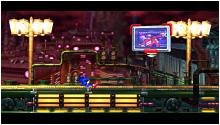

ゲーム紹介
タッグアクション
ソニックとテイルスによるタッグアクション！
今度の冒険は、二本の尻尾で空を飛べる相棒のテイルスが加わり、起動力が大幅アップ！
ソニックの高速アクションに加え、地上/水中/空中とシチュエーションにあわせて変化する３つのタッグアクションによって、ステージ攻略の楽しさが広がります。
［空中］ フライトコンビネーション
尻尾を回転させて空を飛ぶテイルスにつかまって飛行するタッグアクション。
高い崖や奈落の底も、ふたりで協力すれば難なくクリア！
［地上］ ローリングコンビネーション
ソニックとテイルスのふたりで、高速回転しながら突き進むタッグアクション。
進路をふさぐ障害物や頑丈な敵も、粉砕しながら豪快に突破！
［水中］ サブマリンコンビネーション
テイルスの尻尾をスクリューのように回転して進む水中専用タッグアクション。
ソニックの苦手だった水中移動も、テイルスの協力でついに克服！
協力プレイ
友だちと一緒に協力プレイ！
ソニックとテイルスの協力プレイが友だち同士で楽しめるマルチプレイにも対応！
友だちが落下しそうなところをフライトコンビネーションで助けたり、強力なボスと力を合わせて戦うなど、協力プレイならではの攻略が楽しめます。
エピソードメタル
『エピソードI』とのロックオンで隠しエピソードが出現！
前章『ソニック・ザ・ヘッジホッグ4 エピソードI』を持っていると、メタルソニック復活の謎を描いた隠しエピソード「エピソードメタル」がプレイできます！
過去に『ソニック・ザ・ヘッジホッグCD』で敗れたメタルソニックがどのようにして復活を遂げたのか……その謎が明らかになります。
- 
スペシャルステージ
ハーフパイプ型3Dスペシャルステージが復活！
メガドライブ版『ソニック2』でお馴染みのハーフパイプ型スペシャルステージが新仕様となって復活！
新たな障害物やボーナスアイテムを駆使して、カオスエメラルドを集めよう！
もちろんマルチプレイにも対応しているので、友達との協力プレイも楽しめます！